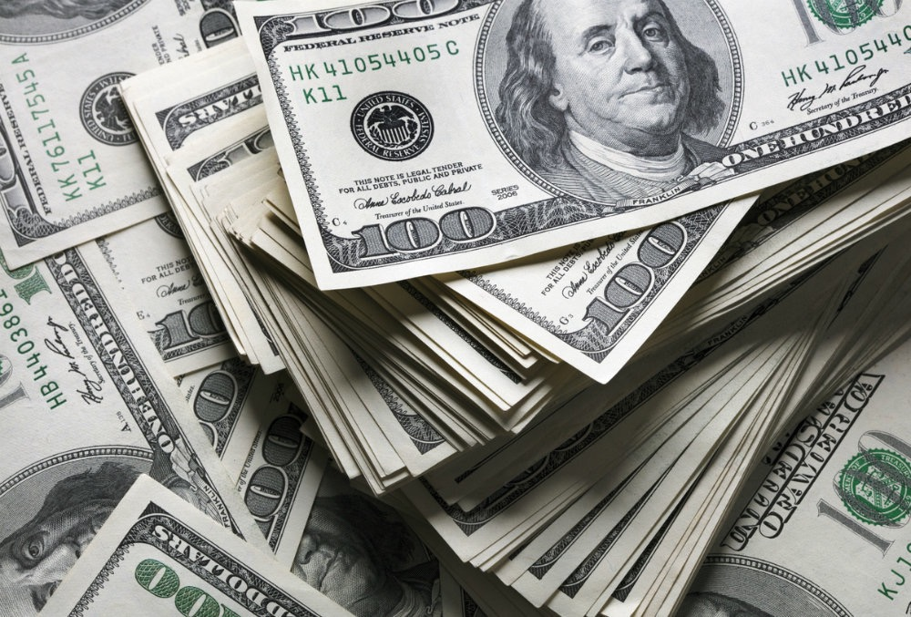

Регистрация в телеграм-боте
Вернуться в раздел "Статьи участников МММ"

Откуда берется прибыль в МММ?
Чаще всего людей интересует вопрос: «Куда будут вложены деньги участников, для получения прибыли?» Ответ на этот вопрос, в общем-то, известен давно и звучит коротко: «Никуда!» Т.е., деньги участников не будут вкладываться куда-либо, но получить свою прибыль они, тем не менее, смогут (и уже получают). Но без теории вряд ли кто поверит даже во всемирное тяготение :) Если уж этот вопрос вызывает столько споров и любопытства, давайте попробуем разобраться в нём.
Для начала вспомним интересный факт. Многие страны занимаются выпуском и продажей ценных бумаг, обещая по ним определенный процент. А люди и компании (часто в этих же странах) с удовольствием приобретают эти бумаги. Вопрос: во что государства вкладывают данные средства для получения прибыли? Пример: американские компании приобрели гособлигации США. А куда вложит эти средства американское государство? Снова в американские компании?! При том проценты по ценным бумагам, выпущенным государством, платятся вполне исправно. :)
Ещё один факт: в современном мире большая часть прибыли имеет эмиссионное происхождение. Как утверждает М. Хазин, до середины 20-го века доля финсектора в мировой экономике составляла менее 10%, поднявшись к 70-м годам до 20%. Сегодня же финсектор распределяет в свою пользу до 70% создаваемой прибыли в экономике. За последние 30 лет дополнительные деньги в мире появлялись не за счет денежной эмиссии (тупого печатания), а благодаря выдаче денег банками под процент с последующей перепродажей получившихся долгов как реального товара. О кредитной эмиссии можно самостоятельно почитать в Интернете. (Прим. ред.: Сделайте паузу и подумайте -- а кто эти долги отдает в конце концов? И делает эти деньги реальными? Подумали?)

Чьи эти растущие долги? Чаще всего - либо частных лиц, либо предприятий. Однако существуют национальные долги целых государств, которые, благодаря налогам в итоге все равно ложатся на плечи обычных людей. Привлекая финансовые ресурсы частных лиц, МММ значительно обесценивает банковскую кредитную эмиссию, перераспределяя общую прибыль по ней в свою пользу. Как это происходит?
Представим, что реальным сектором за день произведена прибыль на $30 млн. Банкирами за этот же день выпускаются в оборот еще $70 млн. долговых денег. Т.к. общая дневная прибыль составляет $100 млн., а источники денег являются обезличенными, то банкиры вполне могут претендовать на свою долю в размере 70% от $30 млн. дополнительных реальных услуг и товаров. Таким образом, финансисты получат реальных товаров, земельных участков, домов и автомобилей на 0,7 * 30 = $21 млн. И это без всяких инвестиций и производства!
Рассмотрим тот же пример в присутствии МММ. Предположим, рост стоимости за день всех МММ-долларов (прим. ред.: ныне называются "МАВРО") в стране составил $50 млн. Тогда значение общей прибыли за день составит уже $150 млн. В прибыли реального сектора доля банков составит 70/150*30 = $14 млн. А участники МММ получат прибыль в размере $10 млн. (50/150*30) в виде реальных услуг и товаров.
Как это получается? Откуда безо всяких инвестиций берется такая прибыль? Ключевое понятие здесь - доверие. От природы ни одна вещь не имеет ценника, а цена чего-либо основана только на вере людей в то, что это стоит именно столько. В случае национальной валюты - это вера в силу гос.машины, гос.пропаганды и в обеспечение наличных денег реальными гос.активами согласно номиналу. Однако в реальности этого нет примерно с 70-х годов XX века ни в одной стране мира. В случае обеспеченных долгами денег - это вера в стабильность системы кредитования, что не работает на фоне экономического кризиса (прим.ред.: сегодняшний рост битка 13.04.2021 яркое тому подтверждение).
В случае МММ речь идёт о вере в приобретение новыми участниками МММ-долларов. Во всех случаях, люди являются источником ценности и носителями доверия. А любая прибыль представляет собой лишь рост ценности со временем, т.е. доверия. Все инвестиции в рекламу, маркетинг, инновации и т.п. являются лишь способом достижения большего человеческого доверия к цифрам на ценнике.
Число доверяющих МММ-доллару людей, растет сегодня в геометрической прогрессии, точно соответствуя росту курса МММ-долларов. В то время, во всем мире падает доверие к заемным и бумажным деньгам. Вот откуда берется прибыль!
Пришло время самостоятельно распоряжаться собственным доверием. Почему именно сегодня? Получение хоть какой-то прибыли для реального сектора сейчас становится всё труднее. Причина кроется в том, что спрос на услуги и товары во всем мире сокращается - из-за долгов люди меньше покупают. Одновременно наблюдается рост цен на сырье и материалы, что увеличивает цены конечной продукции, также снижая и спрос.
Из-за проблем с прибыльностью реального сектора банки выдают меньше кредитов для развития бизнеса, что приводит к сокращению объема кредитной эмиссии. Общее количество новых денег не растет в темпе, необходимом для обслуживания прошлых долгов.
Доверие к обычным деньгам госбанков (а значит, и к их ценности) стремительно падает. В том случае, если новый символ ценности и доверия так и не появится - уже в ближайшее время Америка и Европа будут вынуждены производить настоящую эмиссию денег для обслуживания прошлых долгов, что неминуемо вызовет гиперинфляцию и деградацию финансовой системы (прим. ред.: Эта статья писалась в 2012, а что мы видим в 2021? Какое событие прошлого года было призвано отвлечь людей от настоящей проблемы? Догадаетесь? А я ведь с самого возрождения МММ говорил об этом)
Другими словами, деньги государственных банков уже недалеко от своего логичного финала. Это происходит наряду с завершением длительного периода роста и расширения мирового рынка. Сегодня лишь тот, кто предложит обществу новый эквивалент стоимости и новый образ доверия, сможет определять правила игры грядущей «переоценки ценностей» и перераспределения мировых капиталов и активов.
Сегодня пришло время веры в себя - Мы Можем Многое!
Вернуться в раздел "Статьи участников МММ"
Регистрация в телеграм-боте